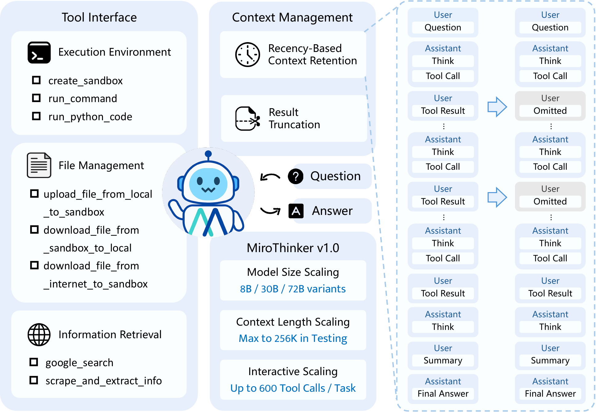
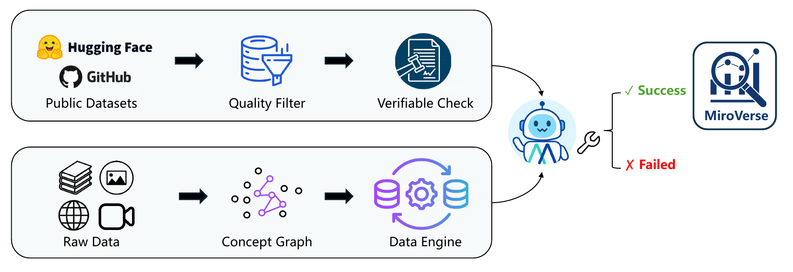
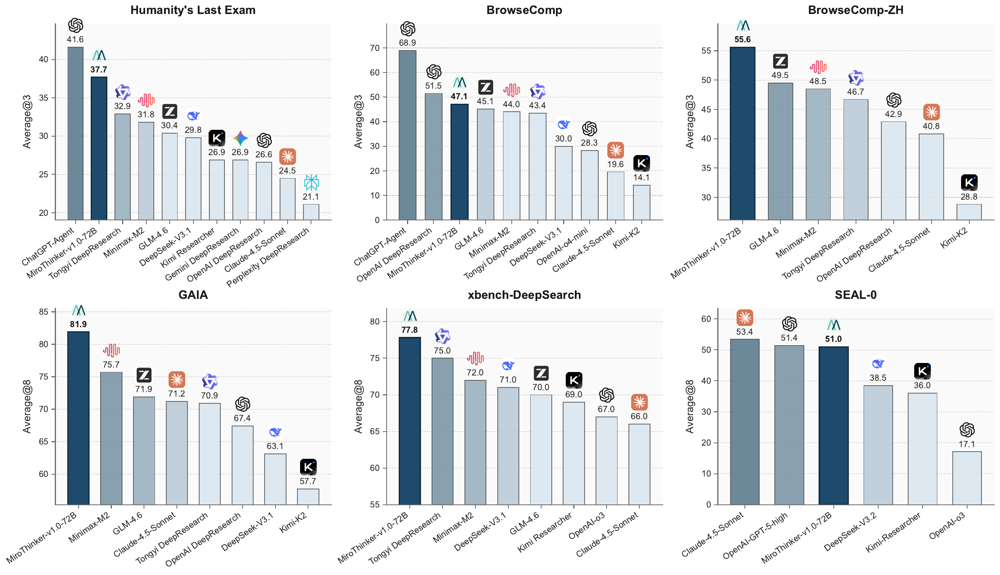
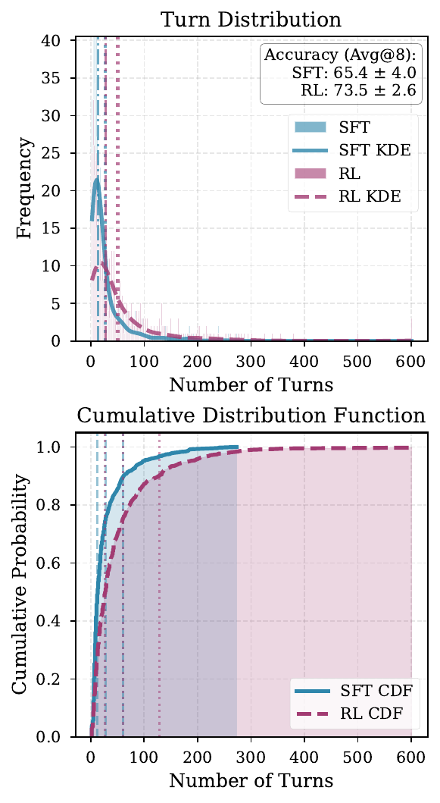
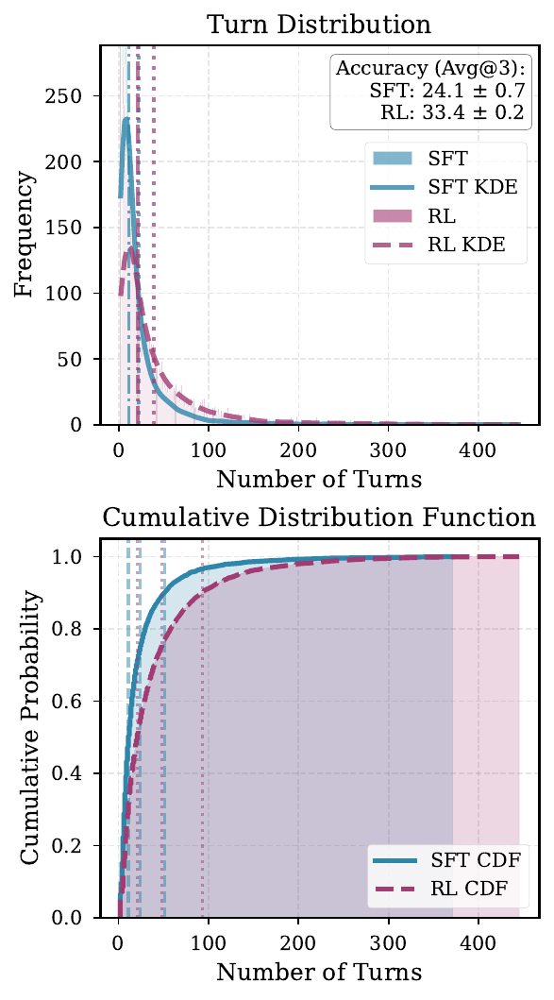

Problem: The Third Scaling Dimension
Commercial research agents (ChatGPT Agent, Claude Research) demonstrate near-human research proficiency. Open-source agents lag due to model size, context length, and interaction depth.
NEW
Previous open-source agents: <100 tool calls per task. MiroThinker: 600 via 256K context window — a 6× leap in interaction depth.

Three-Stage Training Pipeline
Expert trajectory imitation. Build thought–action–observation triplets. Strict filtering of noisy trajectories (repetition, network errors, timeouts).
Preference optimization. Use final answer correctness as preference criterion. Preserve structurally consistent + explicitly planned chosen trajectories.
Online RL exploration. Continuously refine trajectories via environment feedback. Reward = correctness - format penalty.
Key Technical Details

\[ \mathcal{L}_{\text{SFT}}(\theta) = -\mathbb{E}_{(x,H)} \left[ \sum_{t=1}^{T_H} \log \pi_\theta(T_t, A_t \mid x, H_{
\[ \mathcal{L}_\text{PO} = \mathcal{L}_\text{DPO} + \lambda \mathcal{L}_\text{SFT}^{(+)} \]
\[ \hat{A}_i = R(x, H_i) - \frac{1}{G}\sum_{j=1}^G R(x, H_j) \]
\[ R(x, H) = \alpha_c R_\text{correct}(H) - \alpha_f R_\text{format}(H) \]
Correctness reward + format penalty to prevent invalid trajectories.


Experimental Results
Evaluated on GAIA, HLE, BrowseComp and other major research agent benchmarks. MiroThinker-72B achieves SOTA among open-source models, approaching GPT-5-high.
| Model | HLE | BrowseComp | GAIA | BC-ZH |
|---|---|---|---|---|
| Commercial Models | ||||
| GPT-5-high | 35.2 | 54.9 | 76.4 | 65.0 |
| Open-Source Models | ||||
| GLM-4.6 | 30.4 | 45.1 | 71.9 | 49.5 |
| MiniMax-M2 | 31.8 | 44.0 | 75.7 | 48.5 |
| Tongyi-DR-30B | 32.9 | 43.4 | 70.9 | 46.7 |
| MiroThinker-8B | 21.5 | 31.1 | 66.4 | 40.2 |
| MiroThinker-30B | 33.4 | 41.2 | 73.5 | 47.8 |
| MiroThinker-72B | 37.7 | 47.1 | 81.9 | 55.6 |
Research performance improves predictably as interaction depth increases — analogous to scaling law of model size and context length. 72B surpasses all open-source on GAIA (+6.2 vs MiniMax-M2).

Research agents' bottleneck is not one-shot answer generation, but continuous retrieval, verification, and integration. Interaction depth should be studied as an independent scaling axis.